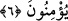

Burada “düşünen bir toplum için ibretler vardır” ifâdesinde mânâ; “akıl gözleriyle
bakıp düşünüp ibret alanlar için” demektir. Çünkü bu âyetler, bir yaratıcının varlığına,
O’nun yüce kudretine ve sonsuz hikmetine delâlet etmektedir. Burada delillere muttalî
olmak ancak akılla mümkün olduğu için akıl özellikle zikredilmiştir.
Fakîr (Bursevî) der ki: Belki de aklın îmân ve îkândan sonraya bırakılarak bu
makama tahsis edilmesinin sırrı şudur: Bu âyet; ulvî, süflî ve bunların arasında deveran
eder. Akıl ise bunların hepsini anlamakta etkilidir. Aynı zamanda aklın îmân ve îkân ile
de ortak bir yönü vardır. Bu böyle bilinmelidir. Ayrıca âyette şu hususa da işâret
edilmektedir. Allah Teâlâ dînî ilimleri hem delillerle tashih edilen kesbî, hem de
şâhidlerle (müşâhedeyle) tahkik edilen vehbî ilimler olarak iki bölümde tespit
etmektedir. Kim bu ilimlerin hem kesbî, hem de vehbî olanını idrak edemezse onun
ayağı sırât-ı müstakîm olan doğru yoldan kayar ve o kimse cehennem azabına düşer.
Bugün taklid ve şaşkınlık içinde, yarın âhirette ebedî tehdid ve azab içinde bocalayıp
durur. Allah Teâlâ bizleri ve sizleri deliller ve şâhidler ehlinden yaparak her inkârcı
kâfirin körlüğünden korusun. O Allah, bir tek olan Allah’tır.
6. İşte sana gerçek olarak okuduğumuz bunlar, Allah’ın âyetleridir. Artık
Allah’tan ve O’nun âyetlerinden sonra hangi söze inanacaklar?
“İşte şunlar”, sûrenin evvelinden itibaren okunan Kur’an âyetleri, tekvînî âyetlere
delâlet eden “Allah’ın âyetleridir, onları sana” Cebrâîl (a.s.) vasıtasıyla “gerçek ile
okuyoruz”.
Bahru’l-ulûm’da şöyle denilmiştir: “Onları sana okuyoruz” ifâdesi sanki “biz bu
âyetlere işâret ediyoruz, o âyetler sana hak olarak okunmuş olup bâtıldan oyundan ve
şakadan uzaktır” denilmiş oluyor. Allah Teâlâ şöyle buyuruyor: “O şaka değildir” (et-
Târık, 86/14). Buradaki “tilke” kelimesi mezkûr delillere de işâret olabilir. “İşte bunlar
Allah’ın varlığına, birliğine, kudretine, ilim ve hikmetine delâlet eden âyetlerdir.
Kur’an okumakla biz sana bu âyetleri okuyoruz.”
“Allah’tan ve O’nun âyetlerinden sonra hangi hadîse” hangi söze ve hangi habere
“inanacaklar?” Allah’ın isminin âyetlere takdimi, tâzim içindir. Bu söz Arapların
“Zeyd ve onun cömertliği hoşuma gitti” sözü gibidir. Bundan Zeyd’in cömertliği murad
edilmektedir. Allah Teâlâ’nın “Eğer Allah’a ve (hak ile bâtılın) ayrılma gününde o
iki topluluğun karşılaştığı Bedir gününde kulumuz Muhammed’e indirdiğimiz
âyetlere inanmışsanız bilin ki aldığınız ganimetlerin beşte biri Allah’a…âiddir”
(el-Enfâl, 8/41) kavli bunun nazîri ve benzeridir. Zira burada da Allah’ın isminin
zikredilmesi, tâzim içindir. Ebû Hayyân’ın burada ve bu yorumda gereksiz olarak